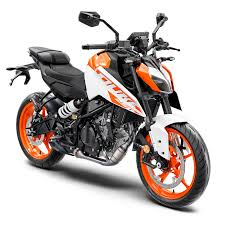
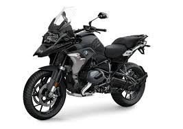
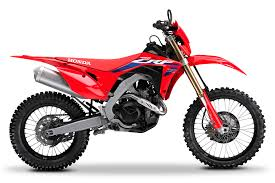
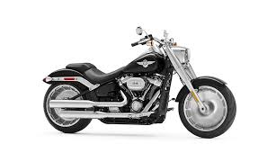
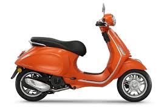

Existen diversos tipos de motocicletas, cada una diseñada para un estilo de conducción específico.
🚀 Clasificación de motos:
🏍 Deportivas: Potentes y aerodinámicas, diseñadas para velocidad. Ejemplo: Yamaha YZF-R1.

💨 Naked: Sin carenado, con diseño agresivo y versátil. Ejemplo: KTM Duke 390.
🛣 Touring: Para viajes largos con mayor comodidad. Ejemplo: BMW R 1250 GS.
🏕 Enduro: Especiales para terrenos difíciles. Ejemplo: Honda CRF450L.
🏍 Chopper/Cruiser: Diseñadas para una conducción relajada. Ejemplo: Harley-Davidson Fat Boy.
🛵 Scooter: Pequeñas y cómodas para la ciudad. Ejemplo: Vespa Primavera.
